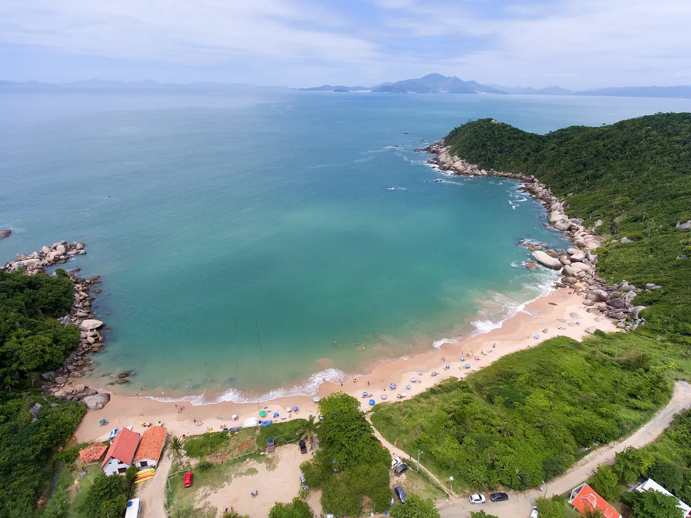
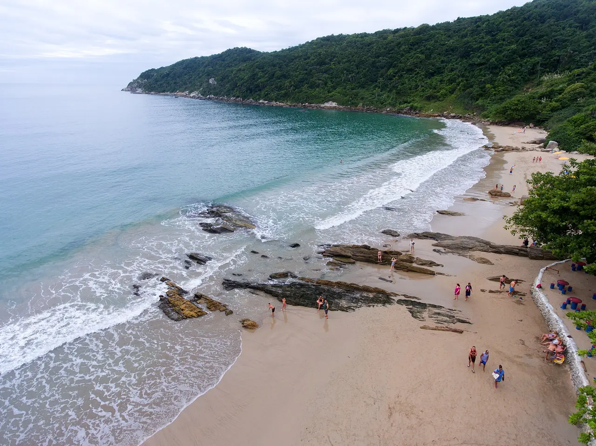
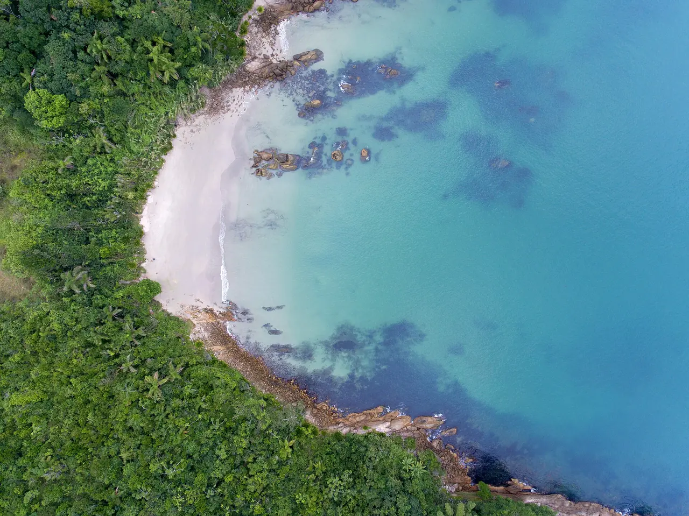
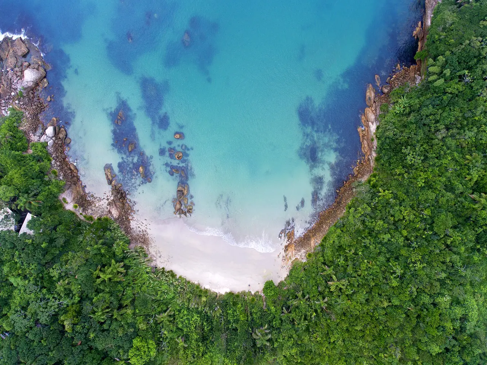
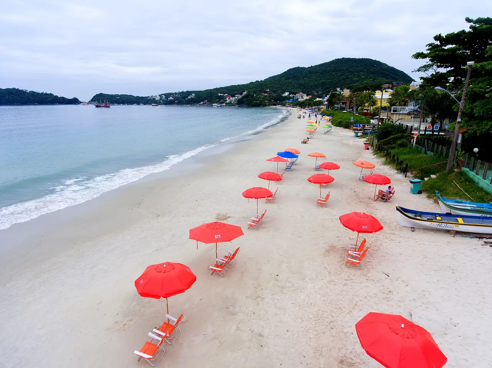
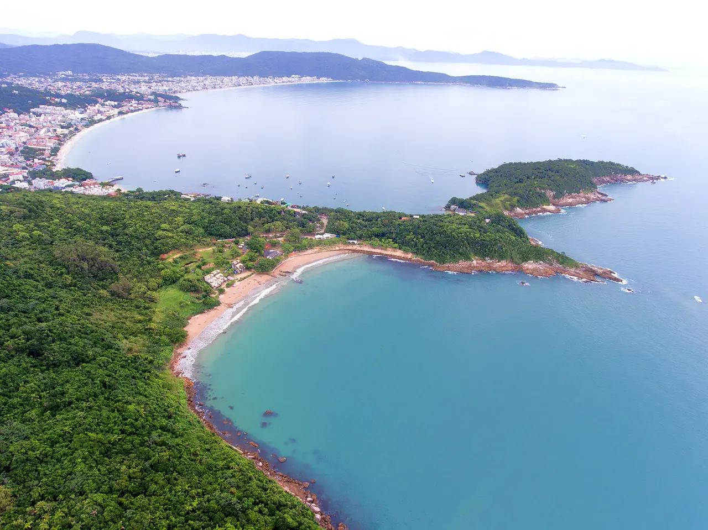

Passeio de barco
Do cais da vila até a ponta, com parada para nadar.
Experiências
Tudo parte da pousada ou fica a menos de 15 minutos a pé. Monte um roteiro e leve na mão ou no celular.
Roteiro
Passeios

Do cais da vila até a ponta, com parada para nadar.

Três quilômetros ida e volta, com mirante no meio. Saia antes das 16h.

Água rasa e calma. Máscara e snorkel emprestados na recepção.

Aula com instrutor e colete, na parte calma da enseada.

Sombrinha e cadeira da pousada, a 4 minutos a pé.

O deck abre às 17h. Bebida e petisco à parte.
Fotos do litoral catarinense, escolhidas de acervo livre; não mostram a pousada. Créditos na galeria.